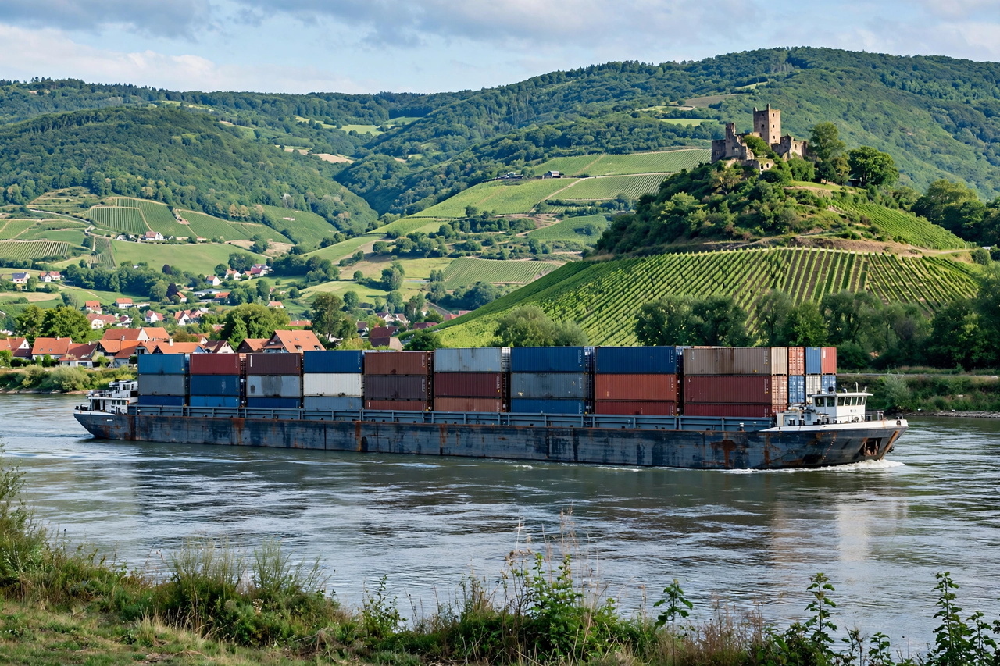

Inland waterways
Inland waterways are navigable rivers, lakes, canals and other inland bodies of water used for transport. They include natural waterways modified for navigation and artificial canals built specifically for boats and barges.

Major systems
- Rhine–Main–Danube system (Europe) — linking the North Sea to the Black Sea
- Mississippi River system (USA) — the world's largest navigable inland waterway network
- Grand Canal (China) — the world's longest canal, over 1,700 km
- British canal network — built during the Industrial Revolution, now largely recreational
Characteristics
Inland waterway transport is economical for bulk cargo (aggregates, grain, coal, containers) and produces lower emissions per tonne-kilometre than road freight, though it is slower and constrained by water levels, locks and bridge heights. Vessels range from narrowboats to pushed barge convoys carrying thousands of tonnes.